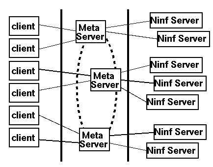

 <center> <H1>  メタサーバネットワーク  </H1> </center> <hr noshade width = 80% algn = "center"> <H2>
登録が面倒 
<center>
--> 複数のメタサーバが、互いに情報を交換する。
</center>
<UL>
<LI> Ninfサーバは一つのメタサーバに登録するだけでよい
<LI> ユーザは一つのメタサーバを知っているだけでよい
</UL>
<center>

</center>
 <hr> <center><table><td><h2>　　　　　　　　　　　　　　　</td><td></td><td></td><td><h2><em>　　　　　　　HOKKE' 96 </td></table></center>

